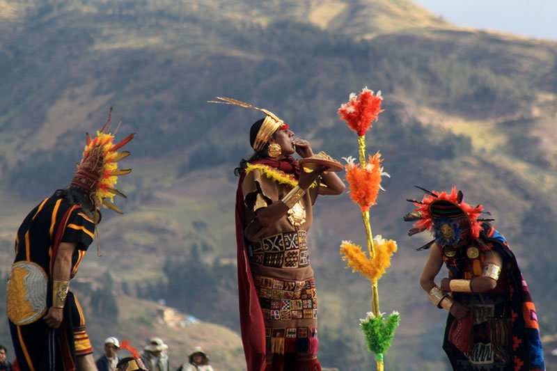

Mucho antes de que llegaran los españoles, e incluso muchísimo más antes de que
se instauraran o aparecieran los incas por estos territorios, había una civilización que habitaba las
tierras que actualmente conocemos como Azuay y Cañar.
Aquellos tiempos donde Ingapirca no era un sitio arqueológico, sino era una ciudad
completamente entera. Poco o nada sabemos a ciencia cierta acerca de estas culturas,
lo que podemos hacer es formular posibles teorías en base a cerámicas y ruinas encontradas.
Los Cañari eran un pueblo orgulloso de guerreros, su forma de gobierno era el cacicazgo, pero
las alianzas eran muy comunes para evitar que hubieran sobrecargos de poder.
Aunque en la actualidad muchas de las cosas que nos den pista sobre más acerca de ellos, y de su cultura,
estén en malas condiciones o aún no han sido descubiertas se ha podido desentrañar lo suficiente como para
tener claro que fueron los primeros habitantes de estos territorios antes de incluso los incas.
Incas

Los incas fueron una gran civilización que surgió de la ciudad sagrada de Cuzco,
y gracias a sus aguerridos soldados y fuerte determinación lograron expandirse por
los territorios que ahora comprendemos como Ecuador, Perú, Bolivia, Chile, Colombia
y Argentina.
Se expandían rápidamente absorviendo conocimiento, culturas y expresiones de otros
pueblos, conformándose así como un gran imperio gobernados por el Inca, el hijo del Sol.
Eventualmente su expansión les llevó a toparse con el pueblo Cañari, que a pesar de luchar
contra la absorción de su pueblo por parte de los incas al final fueron conquistados.
Esto significó un choque e intercambio cultural.
Origen Cañari
Según se puede entender, solían tener la creencia de que su origen fue a través de un animal sagrado;
aunque tenían dos versiones: Una Guacamaya o Una Serpiente todos aceptaban
ambas versiones y los veneraban.
Conquista
Conquista
Años después de que el pueblo Cañari fue absorvido por el actual imperio inca,
llegaron los españoles que en su afán de buscar nuevas rutas de comercio, se encontraron con un
mundo completamente diferente al suyo; uno en mal momento, porque justo se estaba desatando
una guerra civil entre los Incas, así que los tomó por sorpresa.
Además, las nuevas plagas y enfermedades que trajeron del Viejo Mundo.
también hizo que la ventaja fuera a su favor sin tener que esforzarse mucho para
logar con éxito su conquista.
Y así fue, como una vez lo hicieron los incas contra los cañaris, ahora lo estaban haciendo los
españoles contra los incas.
Colonia
Una vez se hubieren establecido los españoles en el Nuevo Mundo
las cosas comenzaron realmente a salir bien para ellos. La expansión de los reinos,
obtención de materiales preciosos, nuevos productos ahora el siguiente paso era establecer colonias.
Las Colonias fueron injustas para la mayoría de los involucrados, ya que los conquistadores tenían un
complejo de superioridad que los llevaron a cometer esclavitud.
Posteriormente comenzaron a haber mezclas entre etnias, las cuales dieron origen a los Criollos
que eran de sangre mestiza, aquellos que tenian más derecho que un indio, pero menos que
un blanco; un punto intermedio de poder. Pero con el pasar de los años, también se fueron
generando diversos tipos de mezclas: mulatos, criollos, sambos, entre otros.
Mientras todo eso ocurría, se siguieron expandiendo ya que cada vez contaban con mejores finanzas.
Así, los Virreyes encomendaron a determinadas personas ilustres y de confianza a ellos la tarea
de seguir expandiendo el territorio de los reinados a través de la exploración y posterior fundación de
ciudades.
Así, el Virrey Andrés Hurtado de Mendoza le ordenó al capitán Gil Ramirez Dávalos
la fundación de una nueva ciudad. Entonces, el lunes 12 de abril de 1557, Dávalos junto con un equipo de sus personas
de confianza decidieron refundar la ciudad sobre las ruinas de lo que alguna vez fue una ciudad Cañari.
Independencia
Después de varias décadas de sufrir un trato injusto, aquellos que alguna vez pisotearon se armaron
de valor y decidieron poner fin a aquella tiranía.
Como nada sale según lo planeado, se tuvieron que realizar diversos intentos para lograr con lo deseado, y
finalmente el 3 de noviembre de 1820 se alcanzó ese objetivo; y aunque el proceso de cambio fue transitivo y complejo
se pudieron instaurar nuevas políticas, nuevas perspectivas más humanas de ver hacia el prójimo.
Traición Cañari
Otro de los factores desicivos de la victoria de los conquistadores fue que
recibieron apoyo de los Cañari, ya que ellos odiaban a los incas en primer lugar.
Época de la República
Luego de la disolución de la Gran Colombia en 1830, Cuenca se separó de la provincia de Azuay.
Actualidad
Era Actual
Actualmente aún se recuerdan aquellas batallas, con todo y victorias y derrotas. Por lo cual cada año
se celebra en aquellas fechas las heroícas acciones de aquellos que entregaron su vida por intentar
hacer del mundo un mejor lugar.
Aún así, todavía queda el legado que dejaron; obras magníficas de grandes escritores y poetas, edificios enormes y
complejos por aquellos grandes arquitectos de esos tiempos. Himnos, compuestos por aquellos que trataron de plasmar
el ferviente deseo de ser mejor, de aquellos mensajes de esperanza, fe y lucha.
Todavía se siguen tradiciones que se remontan desde hace ya mucho tiempo, y mientras ese espíritu entusiasta y devoto siga
en nosotros aquellas tradiciones que engloban emociones, no dejarán de realizarse.
Ciudad Cultural
Cuenca es una de las ciudades del Ecuador que mantiene bien conservado edificios, calles, parques e iglesias que datan desde
los tiempos coloniales. La arquitectura de la ciudad la hace un centro turístico ideal para aquellos que disfruten de ver cómo
era la vida de antes.